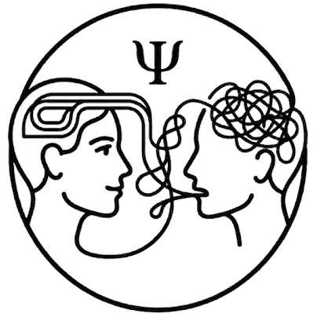
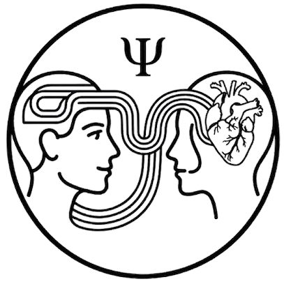
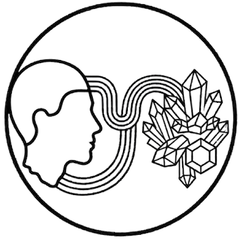
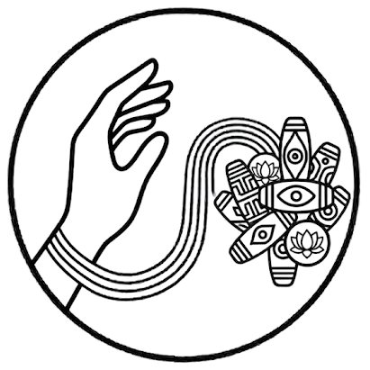

Татьяна Голощапова

Практический ПСИХОЛОГ

Специалист по современной ПСИХОСОМАТИКЕ

Эксперт по подбору натуральных камней

Создаю программные браслеты с бусинами Дзи
С чем я могу помочь?
Работаю с любым некомфортным состоянием, которое волнует человека. Все то, что ему не нравится, от чего он устал, доставляет ему дискомфорт.
ПРОБЛЕМЫ со ЗДОРОВЬЕМ: симптомы, заболевания, диагнозы
ПРОБЛЕМЫ в ОТНОШЕНИЯХ: (с собой, с детьми, с родителями, с партнёрами, с деньгами и другое)
Любые НЕКОМФОРТНЫЕ СОСТОЯНИЯ: (усталость, страхи, тревога, безысходность)
Методы работы
В своей практике соединяю современные психологические знания и глубокий анализ жизненного пути человека.
Работаю при помощи инструментов:
Варианты консультаций
Диагностическая консультация-знакомство
- Познакомимся и разберем ваш запрос
- Поймем, будет ли такая работа полезна именно в вашем случае
Формат 1: Активное слушание
Суть формата: Вы рассказываете о своей проблеме, я направляю вас своими вопросами и объясняю происходящее.
Результат: Снимается изолированность, меняется ваше отношение, и вам точно станет легче на эмоциональном уровне. Находятся ответы на многие вопросы, и проблема может решиться уже на этом этапе.
Формат 2: Зеркальный метод
Для чего подходит: Работа со своим симптомом, заболеванием, тревогой, любым психологическим запросом.
Также метод позволяет помочь решить вопрос близкого для вас человека (дети, родители, партнеры) без его присутствия, если это волнует вас.
Формат 3: Глубинная работа
Глубинная работа с запросом до решения вашей проблемы. На этой консультации я использую все методы и инструменты, которыми владею.
• Обратная связь (смс-поддержка) в течение месяца после сессии.
• Дополнительные упражнения для самостоятельной работы.
Работаю онлайн (по видеосвязи)